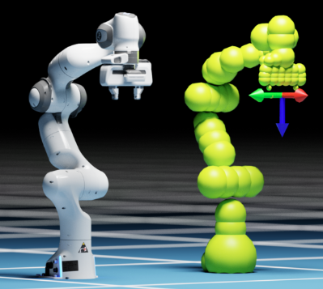

curobo.cuda_robot_model package¶
This module contains GPU accelerated kinematics leveraging CUDA. Kinematics computations enable mapping from a robot’s joint configuration to the pose of the robot’s links in Cartesian space (with reference to the robot’s base link). In cuRobo, robot’s geometry is approximated with spheres and their positions are also computed as part of kinematics. This mapping is differentiable, enabling their use in optimization problems and as part of neural networks.
{kind=link}

Robot representation in cuRobo is shown for the Franka Panda robot.¶
Kinematics in CuRobo currently supports single axis actuated joints, where the joint can be actuated as prismatic or revolute joints. Continuous joints are approximated to revolute joints with limits at [-6, +6] radians. Mimic joints are not supported, so convert mimic joints to independent joints.
CuRobo loads a robot’s kinematic tree from KinematicsTensorConfig. This config is
generated using CudaRobotGenerator. A parser base class
KinematicsParser is provided to help with parsing kinematics from
standard formats. Kinematics parsing from URDF is implemented in
UrdfKinematicsParser. An experimental USD kinematics parser is
provided in UsdKinematicsParser, which is missing an additional
transform between the joint origin and link origin, so this might not work for all robots. An
example workflow for setting up a robot from URDF is shown below:
In addition to parsing data from a kinematics file (urdf, usd), CuRobo also needs a sphere representation of the robot that approximates the volume of the robot’s links with spheres. Several other parameters are also needed to represent kinematics in CuRobo. A tutorial on setting up a robot is provided in Configuring a New Robot. cuRobo also supports using XRDF for representing the additional parameters of the robot that are not available in URDF.
Once a robot configuration file is setup, you can pass this to
CudaRobotModelConfig to generate an instance of kinematics configuraiton.
CudaRobotModel takes this configuration and provides access to kinematics
computations.
Note
CudaRobotModel creates memory tensors that are used by CUDA kernels
while CudaRobotModelConfig contains only the robot kinematics
configuration. To reduce memory overhead, you can pass one instance of
CudaRobotModelConfig to many instances of
CudaRobotModel.
Submodules¶
- curobo.cuda_robot_model.cuda_robot_generator module
CudaRobotGeneratorConfigCudaRobotGeneratorConfig.base_linkCudaRobotGeneratorConfig.ee_linkCudaRobotGeneratorConfig.tensor_argsCudaRobotGeneratorConfig.link_namesCudaRobotGeneratorConfig.collision_link_namesCudaRobotGeneratorConfig.collision_spheresCudaRobotGeneratorConfig.collision_sphere_bufferCudaRobotGeneratorConfig.compute_jacobianCudaRobotGeneratorConfig.self_collision_bufferCudaRobotGeneratorConfig.self_collision_ignoreCudaRobotGeneratorConfig.debugCudaRobotGeneratorConfig.use_global_cumulCudaRobotGeneratorConfig.asset_root_pathCudaRobotGeneratorConfig.mesh_link_namesCudaRobotGeneratorConfig.load_link_names_with_meshCudaRobotGeneratorConfig.urdf_pathCudaRobotGeneratorConfig.usd_pathCudaRobotGeneratorConfig.usd_robot_rootCudaRobotGeneratorConfig.isaac_usd_pathCudaRobotGeneratorConfig.use_usd_kinematicsCudaRobotGeneratorConfig.usd_flip_jointsCudaRobotGeneratorConfig.usd_flip_joint_limitsCudaRobotGeneratorConfig.lock_jointsCudaRobotGeneratorConfig.extra_linksCudaRobotGeneratorConfig.add_object_linkCudaRobotGeneratorConfig.use_external_assetsCudaRobotGeneratorConfig.external_asset_pathCudaRobotGeneratorConfig.external_robot_configs_pathCudaRobotGeneratorConfig.extra_collision_spheresCudaRobotGeneratorConfig.cspaceCudaRobotGeneratorConfig.load_meshes
CudaRobotGeneratorCudaRobotGenerator.kinematics_configCudaRobotGenerator.self_collision_configCudaRobotGenerator.kinematics_parserCudaRobotGenerator.initialize_tensorsCudaRobotGenerator.add_linkCudaRobotGenerator.add_fixed_linkCudaRobotGenerator._build_chainCudaRobotGenerator._get_mimic_joint_dataCudaRobotGenerator._build_kinematics_tensorsCudaRobotGenerator._build_kinematicsCudaRobotGenerator._build_kinematics_with_lock_jointsCudaRobotGenerator._build_collision_modelCudaRobotGenerator._create_self_collision_thread_dataCudaRobotGenerator._add_body_to_treeCudaRobotGenerator._get_joint_linksCudaRobotGenerator._get_link_posesCudaRobotGenerator.get_joint_limitsCudaRobotGenerator._get_joint_position_velocity_limitsCudaRobotGenerator._update_joint_limitsCudaRobotGenerator.add_object_linkCudaRobotGenerator.asset_root_pathCudaRobotGenerator.collision_link_namesCudaRobotGenerator.collision_sphere_bufferCudaRobotGenerator.collision_spheresCudaRobotGenerator.compute_jacobianCudaRobotGenerator.cspaceCudaRobotGenerator.debugCudaRobotGenerator.external_asset_pathCudaRobotGenerator.external_robot_configs_pathCudaRobotGenerator.extra_collision_spheresCudaRobotGenerator.extra_linksCudaRobotGenerator.isaac_usd_pathCudaRobotGenerator.link_namesCudaRobotGenerator.load_link_names_with_meshCudaRobotGenerator.load_meshesCudaRobotGenerator.lock_jointsCudaRobotGenerator.mesh_link_namesCudaRobotGenerator.self_collision_bufferCudaRobotGenerator.self_collision_ignoreCudaRobotGenerator.tensor_argsCudaRobotGenerator.urdf_pathCudaRobotGenerator.usd_flip_joint_limitsCudaRobotGenerator.usd_flip_jointsCudaRobotGenerator.usd_pathCudaRobotGenerator.usd_robot_rootCudaRobotGenerator.use_external_assetsCudaRobotGenerator.use_global_cumulCudaRobotGenerator.use_usd_kinematicsCudaRobotGenerator.base_linkCudaRobotGenerator.ee_link
- curobo.cuda_robot_model.cuda_robot_model module
CudaRobotModelConfigCudaRobotModelConfig.tensor_argsCudaRobotModelConfig.link_namesCudaRobotModelConfig.kinematics_configCudaRobotModelConfig.self_collision_configCudaRobotModelConfig.kinematics_parserCudaRobotModelConfig.compute_jacobianCudaRobotModelConfig.use_global_cumulCudaRobotModelConfig.generator_configCudaRobotModelConfig.get_joint_limitsCudaRobotModelConfig.from_basic_urdfCudaRobotModelConfig.from_basic_usdCudaRobotModelConfig.from_content_pathCudaRobotModelConfig.from_robot_yaml_fileCudaRobotModelConfig.from_data_dictCudaRobotModelConfig.from_configCudaRobotModelConfig.cspaceCudaRobotModelConfig.dof
CudaRobotModelStateCudaRobotModelState.ee_positionCudaRobotModelState.ee_quaternionCudaRobotModelState.lin_jacobianCudaRobotModelState.ang_jacobianCudaRobotModelState.links_positionCudaRobotModelState.links_quaternionCudaRobotModelState.link_spheres_tensorCudaRobotModelState.link_namesCudaRobotModelState.ee_poseCudaRobotModelState.get_link_spheresCudaRobotModelState.link_poseCudaRobotModelState.link_poses
CudaRobotModelCudaRobotModel.update_batch_sizeCudaRobotModel.forwardCudaRobotModel.get_stateCudaRobotModel.compute_kinematicsCudaRobotModel.compute_kinematics_from_joint_stateCudaRobotModel.compute_kinematics_from_joint_positionCudaRobotModel.get_robot_link_meshesCudaRobotModel.get_robot_as_meshCudaRobotModel.get_robot_as_spheresCudaRobotModel.get_link_posesCudaRobotModel._cuda_forwardCudaRobotModel.all_articulated_joint_namesCudaRobotModel.get_self_collision_configCudaRobotModel.get_link_meshCudaRobotModel.get_link_transformCudaRobotModel.get_all_link_transformsCudaRobotModel.get_dofCudaRobotModel.dofCudaRobotModel.joint_namesCudaRobotModel.total_spheresCudaRobotModel.lock_jointstateCudaRobotModel.get_full_jsCudaRobotModel.get_mimic_jsCudaRobotModel.update_kinematics_configCudaRobotModel.attach_external_objects_to_robotCudaRobotModel.get_active_jsCudaRobotModel.ee_linkCudaRobotModel.base_linkCudaRobotModel.robot_spheresCudaRobotModel.retract_configCudaRobotModel.compute_jacobianCudaRobotModel.cspaceCudaRobotModel.from_basic_urdfCudaRobotModel.from_basic_usdCudaRobotModel.from_configCudaRobotModel.from_content_pathCudaRobotModel.from_data_dictCudaRobotModel.from_robot_yaml_fileCudaRobotModel.generator_configCudaRobotModel.get_joint_limitsCudaRobotModel.kinematics_parserCudaRobotModel.self_collision_configCudaRobotModel.use_global_cumulCudaRobotModel.tensor_argsCudaRobotModel.link_namesCudaRobotModel.kinematics_config
- curobo.cuda_robot_model.kinematics_parser module
- curobo.cuda_robot_model.types module
JointTypeJointLimitsCSpaceConfigCSpaceConfig.joint_namesCSpaceConfig.retract_configCSpaceConfig.cspace_distance_weightCSpaceConfig.null_space_weightCSpaceConfig.tensor_argsCSpaceConfig.max_accelerationCSpaceConfig.max_jerkCSpaceConfig.velocity_scaleCSpaceConfig.acceleration_scaleCSpaceConfig.jerk_scaleCSpaceConfig.position_limit_clipCSpaceConfig.inplace_reindexCSpaceConfig.copy_CSpaceConfig.cloneCSpaceConfig.scale_joint_limitsCSpaceConfig.load_from_joint_limits
KinematicsTensorConfigKinematicsTensorConfig.fixed_transformsKinematicsTensorConfig.link_mapKinematicsTensorConfig.joint_mapKinematicsTensorConfig.joint_map_typeKinematicsTensorConfig.joint_offset_mapKinematicsTensorConfig.store_link_mapKinematicsTensorConfig.link_chain_mapKinematicsTensorConfig.link_namesKinematicsTensorConfig.joint_limitsKinematicsTensorConfig.non_fixed_joint_namesKinematicsTensorConfig.n_dofKinematicsTensorConfig.mesh_link_namesKinematicsTensorConfig.joint_namesKinematicsTensorConfig.lock_jointstateKinematicsTensorConfig.mimic_jointsKinematicsTensorConfig.link_spheresKinematicsTensorConfig.link_sphere_idx_mapKinematicsTensorConfig.link_name_to_idx_mapKinematicsTensorConfig.total_spheresKinematicsTensorConfig.debugKinematicsTensorConfig.ee_idxKinematicsTensorConfig.cspaceKinematicsTensorConfig.base_linkKinematicsTensorConfig.ee_linkKinematicsTensorConfig.reference_link_spheresKinematicsTensorConfig.copy_KinematicsTensorConfig.load_cspace_cfg_from_kinematicsKinematicsTensorConfig.get_sphere_index_from_link_nameKinematicsTensorConfig.update_link_spheresKinematicsTensorConfig.get_link_spheresKinematicsTensorConfig.get_reference_link_spheresKinematicsTensorConfig.attach_objectKinematicsTensorConfig.detach_objectKinematicsTensorConfig.get_number_of_spheresKinematicsTensorConfig.disable_link_spheresKinematicsTensorConfig.enable_link_spheres
SelfCollisionKinematicsConfigSelfCollisionKinematicsConfig.offsetSelfCollisionKinematicsConfig.thread_locationSelfCollisionKinematicsConfig.thread_maxSelfCollisionKinematicsConfig.distance_thresholdSelfCollisionKinematicsConfig.experimental_kernelSelfCollisionKinematicsConfig.collision_matrixSelfCollisionKinematicsConfig.checks_per_thread
- curobo.cuda_robot_model.urdf_kinematics_parser module
UrdfKinematicsParserUrdfKinematicsParser.build_link_parentUrdfKinematicsParser._get_joint_nameUrdfKinematicsParser._get_joint_limitsUrdfKinematicsParser.get_link_parametersUrdfKinematicsParser.add_absolute_path_to_link_meshesUrdfKinematicsParser.get_urdf_stringUrdfKinematicsParser.get_link_meshUrdfKinematicsParser.root_linkUrdfKinematicsParser._get_from_extra_linksUrdfKinematicsParser.get_chainUrdfKinematicsParser.get_controlled_joint_namesUrdfKinematicsParser._parent_map
- curobo.cuda_robot_model.usd_kinematics_parser module
UsdKinematicsParserUsdKinematicsParser.robot_prim_rootUsdKinematicsParser.build_link_parentUsdKinematicsParser.get_link_parametersUsdKinematicsParser._get_joint_transformUsdKinematicsParser._get_from_extra_linksUsdKinematicsParser.add_absolute_path_to_link_meshesUsdKinematicsParser.get_chainUsdKinematicsParser.get_controlled_joint_namesUsdKinematicsParser.get_link_meshUsdKinematicsParser._parent_map
get_links_for_joint
- curobo.cuda_robot_model.util module